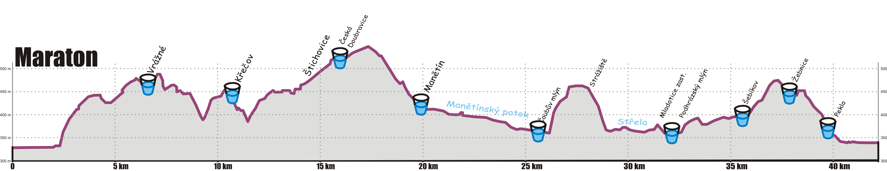

Maraton Baroko · sobota 5. 9. 2026
42,37 km, +728 m / -728 m. Cíl: dobře odběhnutý závod, ne čas. Plánovaný výsledek 3:30-3:42.

Oficiální profil organizátora. Potvrzuje devět občerstvovaček ve stejném pořadí a souhlasí s analýzou trasy - včetně vrcholu kolem km 17 a klíčového stoupání na km 25-27.
Start i cíl na 324 m, nejvyšší bod 548 m. Rovina je jen 36 % trati - 35 % stoupání, 28 % seběhů. Tempo nemůže být vodítkem; den řídí TF.
| Fáze | km | Profil | Charakter |
|---|---|---|---|
| 1. Start | 0 - 1,8 | rovina | ~9 minut do první stěny |
| 2. Stoupavá polovina | 1,8 - 17 | +400 m po částech | skutečná práce závodu |
| 3. Dárek | 17 - 25 | -148 m, pak rovina | nejrychlejší, nejlépe běžitelné |
| 4. Klíčové místo | 25 - 28,5 | +115 m @ 7,2 %, pak -126 m @ -7,2 % | nejtěžší stoupání + zabiják stehen |
| 5. Finále | 28,5 - 42,4 | +90 m na km 34-37, pak -157 m, 2 km rovina | dřina, pak rychlost zdarma |
| km | Délka | Převýšení | Sklon |
|---|---|---|---|
| 1,80 - 3,85 | 2,05 km | +120 m | +5,8 % |
| 4,50 - 5,70 | 1,20 km | +57 m | +4,7 % |
| 8,95 - 10,00 | 1,05 km | +61 m | +5,8 % |
| 11,00 - 12,60 | 1,60 km | +55 m | +3,4 % |
| 13,45 - 15,50 | 2,05 km | +79 m | +3,9 % |
| 15,85 - 16,95 | 1,10 km | +27 m | +2,4 % |
| 25,10 - 26,70 | 1,60 km | +115 m | +7,2 % |
| 31,55 - 32,50 | 0,95 km | +33 m | +3,5 % |
| 34,25 - 37,15 | 2,90 km | +90 m | +3,1 % |
| km | Délka | Ztráta | Sklon |
|---|---|---|---|
| 6,85 - 7,25 | 0,40 km | -29 m | -7,4 % |
| 8,15 - 8,95 | 0,80 km | -54 m | -6,8 % |
| 10,00 - 11,00 | 1,00 km | -60 m | -6,0 % |
| 16,95 - 20,35 | 3,40 km | -148 m | -4,4 % |
| 26,70 - 28,45 | 1,75 km | -126 m | -7,2 % |
| 37,15 - 37,90 | 0,75 km | -41 m | -5,5 % |
| 38,30 - 40,30 | 2,00 km | -116 m | -5,8 % |
Referenční hodnota z kalibrace 1. 9. 2026: na rovině TF 150 = tempo 4:45-4:52/km.
| Fáze | Cílová TF | Tempo |
|---|---|---|
| km 0 - 1,8 | řídí tempo, ne TF | 4:55-5:00, nikdy rychleji |
| km 1,8 - 2,0 | přebírá TF, očekávej ≤ 150 | — |
| Stoupání 1,8 - 3,85 | ≤ 158, krátce 162 OK | ~7:00. Nad 8 % jdi |
| km 4 - 17 | 152-158 | stoupání 5:20-6:15, roviny 4:50-5:00 |
| km 17 - 25 | 155-160 | seběhy uvolněně 4:15-4:30 (ne 3:45), roviny 4:45-4:55 |
| Stoupání 25 - 27 | 160-165 max | 6:00-6:15, strmé úseky jdi |
| Seběh 27 - 28,5 | TF ignoruj | 4:15-4:30, brzdi jemně |
| km 28,5 - 34 | ~160 | 4:50-5:10 |
| Stoupání 34 - 37 | až 165 | 5:55-6:00, běh a chůze |
| km 37 - 42 | volně | co nohy dají |
Kde se závod rozhoduje: km 25-28,5. S TF 155-158 po disciplinovaném začátku budeš předbíhat až do cíle. S TF 165 tam závod skončí.
Čtyři z devíti leží v seběhu nebo v polovině stoupání, takže občerstvovačky jsou na pití, ne na jídlo. Poslední (Peklo 39,8) se vynechává - je 2,6 km před cílem v seběhu.
| km | Název | Sklon | Role |
|---|---|---|---|
| 6,5 | Vrážné | +3,5 % | tyčinka krátce před + banán + izotonik |
| 10,6 | Křečov | -6,2 % | banán + izotonik + sodík. Tyčinku ne |
| 16,3 | Česká Doubravice | +3,0 % | tyčinka krátce před + banán + izotonik |
| 19,7 | Manětín | -3,5 % | banán + izotonik + sodík. Pij 2 kelímky |
| 25,3 | Čoubův mlýn | +5,0 % | tyčinka snědená před ní + banán. Pij 2-3 kelímky - dál 6,2 km bez tekutin |
| 31,5 | Mladotice zast. | +0,8 % | tyčinka krátce před + banán + izotonik + sodík |
| 35,2 | Šebíkov | +3,2 % | tyčinka krátce před + banán + izotonik |
| 37,6 | Žebnice | -6,0 % | jen izotonik, banán podle chuti. Tyčinku ne - je pozdě |
| -5,3 % | vynech |
Nejdelší mezera je 25,3 → 31,5, tedy 6,2 km - obsahuje stoupání 7,2 % i seběh -7,2 %, nejtěžší úsek závodu.
Láhev není - pije se jen na občerstvovačkách. To je hlavní omezení celého plánu: tyčinka se nedá spolknout nasucho, takže každá dávka jídla musí padnout těsně před občerstvovačku.
Tyčinka Chocoland Kokino, 50 g: 29 g sacharidů (půlka 14,5 g). Celé jdou dolů brzy, po km 25 jsou téměř nemožné.
Vezmi 4 tyčinky: 3 celé v obalu, 1 nakrájenou na 2 jednotlivě zabalené půlky. Pátou vezmi jen jako rezervu, pokud by závod šel na 3:50 a víc.
| Jídlo v km | Spláchni na | Úroveň | Množství | Sklon |
|---|---|---|---|---|
| ~6,1 | 6,5 Vrážné | A | CELÁ | -2,9 % |
| ~15,9 | 16,3 Česká Doubravice | A | CELÁ | +1,0 % rovina |
| ~24,8 | 25,3 Čoubův mlýn | A | CELÁ, kolik dáš | -0,2 % rovina |
| ~31,1 | 31,5 Mladotice | A | půlka | -1,9 % |
| ~34,8 | 35,2 Šebíkov | B | půlka | +2,5 % |
Kolik to dá: povinná úroveň A + banán + izotonik ~63 g/h, plán A+B ~75 g/h. Cíl je 60-75 g/h, takže to vychází - ale jen když se na každé stanici skutečně napiješ dvakrát. Na jednom kelímku spadne příjem pod 55 g/h a chybí i tekutiny.
Hrudní pás není - závod jede na optickém snímači hodinek. Snímač měří poctivě, ale má tři slabiny:
Jak je nosit: utažené, 1-2 prsty nad kostí zápěstí, přímo na kůži, ne přes rukáv. Rozklusej se před startem: 10 minut volně + 3-4 rovinky - prokrví to kůži, takže snímač je poctivý od km 0.
| km | Kde | 3:35 plán | 3:30 | 3:25 |
|---|---|---|---|---|
| 6 | klesání do Vrážného | 0:32:53 | 0:32:05 | 0:31:11 |
| 10 | 0:52:37 | 0:51:25 | 0:50:07 | |
| 12 | hodina - v 1:00 jsi na 11,6 | 1:02:30 | 1:01:10 | 0:59:43 |
| 14 | třetina | 1:13:02 | 1:11:26 | 1:09:41 |
| 20 | 1:42:07 | 1:40:01 | 1:37:49 | |
| 21 | půlka podle hodinek | 1:46:57 | 1:44:43 | 1:42:22 |
| 24 | tyčinka na 24,8, pak klíčové stoupání | 2:01:23 | 1:58:45 | 1:55:56 |
| 30 | 2:31:59 | 2:28:41 | 2:25:09 | |
| 38 | výběh ze Žebnice | 3:14:52 | 3:10:29 | 3:05:48 |
| 42,37 | cíl | 3:35:02 | 3:30:13 | 3:25:02 |
Podle celých hodin (plán 3:35): 1 h → km 11,6 · 2 h → km 23,7 · 3 h → km 35,3. Tedy hrubě 12 / 24 / 35 - a dvě hodiny padnou přesně na kritickou tyčinku.
Rovinná báze: 3:35 → 4:51/km, 3:30 → 4:43/km, 3:25 → 4:34/km.
3:30 nehoň od startu. Znamená to rovinnou bázi 4:43/km místo 4:51, tedy 8 s/km rychleji po celou dobu. Kalibrace z 1. 9. říká, že 4:45-4:52 na rovině odpovídá TF 150 - na svěžích nohách a na jednom kilometru. Držet 4:43 na rovinách celý maraton znamená sedět od začátku na horní hranici pásma, což je přesně ta chyba z 23. 5.
Správný postup: odjeď plán na 3:35. Když jsi na km 28 za klíčovým místem a cítíš se dobře, posledních 14 km tě na 3:30 dostane samo. Řádek 3:30 je tedy kontrola, ne cíl.
3:25 je mimo. Potřebovalo by to 4:34/km na rovině, tedy 17 s/km nad plán - to je blízko prahového tempa udržovaného přes 728 m stoupání. V datech navíc není žádný dobře odběhnutý maraton, o který by se to dalo opřít. Tvůj odhad byl správný.
Cíle přepočítané podle sklonu, s přidanou únavou po km 20 a km 30. Cíle pro seběhy ber jako strop, ne jako něco, co se má honit.
| km | Sklon | Tempo | Kumulativně |
|---|